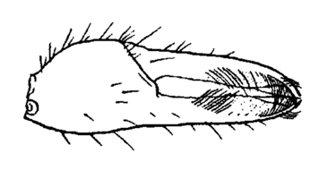

Fiddler Crabs
Uca zacae
Lesser Mexican Fiddler Crab
Type
Information
Photos
Video
Art
References
Species List
Type Description
Uca zacae
Crane, J. (1941) Eastern Pacific Expeditions of the New York Zoological Society. XXVI. Crabs of the genus
Uca
from the west coast of Central America.
Zoologica NY
26:145–208.
Information
Subgenus
Minuca
Common Names
Lesser Mexican Fiddler Crab
Synonyms, Alternate Spellings, & Name Forms
Uca (Minuca) zacae
,
Uca zacae
Geographic Range
Eastern Pacific: Mexico (Bay of Altata, Sinaloa) to Costa Rica (Golfito)
Download SVG line map of ranges.
Map data derived from:
Crane (1975)
;
Hendrickx (1979)
;
Hendrickx (1984)
;
Hendrickx & Salgado-Barragán (1992)
External Links
Encyclopedia of Life
Wikipedia
iNaturalist
NCBI Taxonomy Browser/Genbank
GBIF
Photos
No pictures available at this time.
Video
No videos available at this time.
Art

References
Barnwell, F.H. (1968) Comparative aspects of the chromatophoric responses to light and temperature in fiddler crabs of the genus
Uca
.
Biological Bulletin
134(2):221–234.
Barnwell, F.H., and W.A. Szelistowski (1985) Twenty-one species of fiddler crabs (genus
Uca
) from a small tidal river on the Pacific coast of Costa Rica.
American Zoologist
25(4):86A.
Beinlich, B., and H.-O. von Hagen (2006) Materials for a more stable subdivision of the genus
Uca
Leach.
Zoologische Mededelingen
80(4):9–32.
Bott, R. (1954) Dekapoden (Crustacea) aus El Salvador. 1. Winkerkrabben (
Uca
).
Senckenbergiana biologica
35(3–4):155–180.
Brusca, R.C. (1973)
A Handbook to the Common Intertidal Invertebrates of the Gulf of California
. Tucson, Arizona: University of Arizona Press.
Brusca, R.C. (1980)
Common Intertidal Invertebrates of the Gulf of California
. Second Edition. Tucson, Arizona: University of Arizona Press.
Crane, J. (1941) Eastern Pacific Expeditions of the New York Zoological Society. XXVI. Crabs of the genus
Uca
from the west coast of Central America.
Zoologica NY
26:145–208.
Crane, J. (1947) Eastern Pacific expeditions of the New York Zoological Society. XXXVIII. Intertidal brachygnathous crabs from the west coast of tropical America with special reference to ecology.
Zoologica
32(2):69–95.
Crane, J. (1975)
Fiddler Crabs of the World: Ocypodidae: Genus Uca
. Princeton, NJ: Princeton University Press.
Fingerman, M. (1970) Comparative physiology: Chromatophores.
Annual Review of Physiology
32:345–372.
Holthuis, L.B. (1954) Observaciones sobre los crustaceos decapodos de la Republica de El Salvador.
Comunicaciones Universidad de El Salvador. Instituto Tropical de Investigaciones Cientificas
3(4):159–166.
Holthuis, L.B. (1954) On a collection of decapod Crustacea from the republic of El Salvador (Central America).
Zoologische Verhandelingen
23:1–43.
Landstorfer, R.B., and C.D. Schubart (2010) A phylogeny of Pacific fiddler crabs of the subgenus
Minuca
(Crustacea, Brachyura, Ocypodidae:
Uca
) with the description of a new species from a tropical gulf in Pacific Costa Rica.
Journal of Zoological Systematics and Evolutionary Research
48(3):214–218.
Rao, K.R. (1985) Pigmentary effectors. Pp. 395–462 in
The Biology of Crustacea, Volume 9: Integument, Pigments, and Hormonal Processes
, D.E. Bliss and L.H. Mantel, eds., Volume 9. Orlando, FL: Academic Press.
von Hagen, H.-O. (1968) Studien an peruanischen Winkerkrabben (
Uca
).
Zoologische Jahrbücher. Abteilung für Systematik, Ökologie und Geographie der Tiere
95(2):395–468. {Studies of Peruvian fiddler-crabs (
Uca
)}
von Hagen, H.-O. (1987) Morphologie und Winkbalz einer neuen
Uca
-Art (Crustacea, Brachyura) aus dem Staat Espirito Santo (Brasilien).
Mitteilungen aus dem hamburgischen zoologischen Museum und Institut
84:81–94. {Morphology and waving display of a new species of
Uca
(Crustacea, Brachyura) from the state of Espirito Santo (Brazil)}
{kind=link}